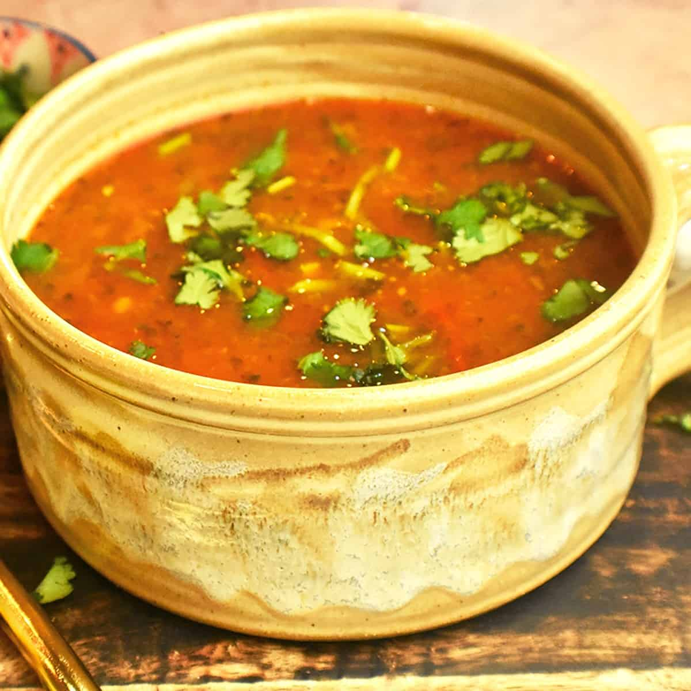

Authentic Rasam Recipe

Description
Rasam is a traditional South Indian soup known for its tangy, spicy, and aromatic flavors. It is typically made with tamarind, tomatoes, and a blend of spices, often served as a comforting accompaniment to rice.
This rasam recipe brings authentic flavors to your table, perfect for a light, healthy, and warming meal.
Ingredients
- 2 cups water
- 1 small lemon-sized ball of tamarind (soaked and extracted)
- 2 medium tomatoes, chopped
- 1/4 cup cooked toor dal (optional)
- 2 teaspoons rasam powder
- 1/4 teaspoon turmeric powder
- 1/2 teaspoon black pepper powder
- 2 teaspoons ghee or oil
- 1/2 teaspoon mustard seeds
- 2 dried red chilies
- 1 sprig curry leaves
- 2 garlic cloves, crushed
- 1/4 teaspoon asafoetida (hing)
- Chopped coriander leaves for garnish
- Salt to taste
Steps
- In a pot, boil 2 cups of water. Add the tamarind extract, chopped tomatoes, turmeric powder, and salt.
- Cook until the tomatoes are soft and the mixture becomes fragrant.
- Add rasam powder and black pepper powder. Mix well.
- If using cooked toor dal, mash it well and add to the mixture. Simmer for 5-7 minutes.
- Heat ghee or oil in a separate pan. Add mustard seeds and let them splutter.
- Add dried red chilies, curry leaves, crushed garlic, and asafoetida. Fry until aromatic.
- Pour this tempering over the rasam and mix well.
- Garnish with chopped coriander leaves.
- Serve hot with steamed rice or enjoy it as a flavorful soup.
Back to homepage